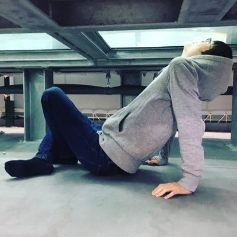

加賀 正樹 / Kaga Masaki / kagasan
奈良先端科学技術大学院大学 修士2年プログラミングが好きです。
プログラミングコンテストも好きです。
専門分野
- コンピュータビジョン
- 光
研究発表
- 作業中
参加コンテスト
- ICPC ASIA 33位(2018Yokohama)
- パソコン甲子園・プログラミング部門 8位入賞(2013)
- 高専プロコン・競技部門 優勝・文部科学大臣賞・情報処理学会若手奨励賞・BCN ITジュニア賞(2014)，準優勝(2017)，審査員特別賞(2015)
- NAPROCK First Runner Up Prize(2014，2017)
- U-22プロコン 経済産業省商務情報政策局長賞・PCA Dream21賞・さくらインターネット賞・Best Viewers賞(2017)
- トラッキングコンペティション 3位入賞(2016)
- CADDi 2019 16位入賞(2019)
- 他，予選通過オンサイト エポック@まつやま(2012)，Code Formula(2014)，Code Festival(2015)，高専プロコン・競技部門(2013，2016)，全国統一プログラミング王決定戦(2019)，第一回日本最強プログラマー学生選手権(2019)
ウェブアプリ
- Virtual Contest(メンテ中です)